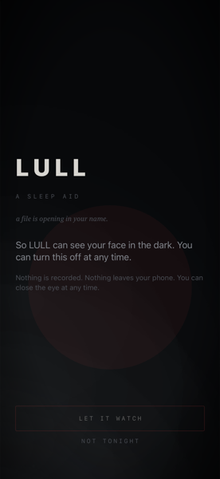
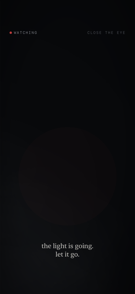
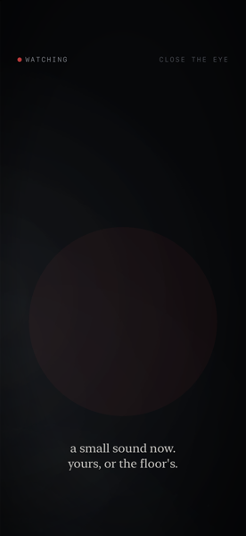
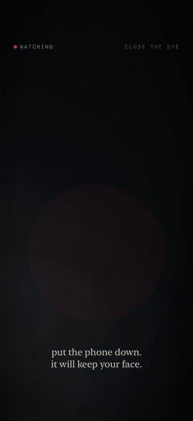
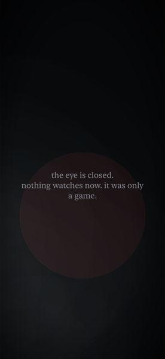

Not “a scary game on a phone” — the scary thing is the phone. It is in your hand, it has a camera on your face and a mic in your room, it knows it is late, and it can reach you after you have closed it.
Everything LULL does is driven by one small, tested state machine —
EyeSession.Phase — and one pure narration layer laid over
it, Atmosphere, that speaks in four literary registers
(Kafka, Beckett, Poe, and Bulgakov) but touches no sensor and can
never widen what the game is permitted to do. What follows are the
real, shipped lines a player actually meets, phase by phase — keep
scrolling, and watch the eye behind the page open with you.
Before anything begins. Nothing has started, so nothing speaks —
the one phase Atmosphere stays silent for.
a file is opening in your name.
Kafka's register — the threshold. Asked in-app, before any OS prompt. Two real choices, both safe: let it watch, or not tonight.

seekingConsentclose your eyes.
let it watch for you.
Beckett's register — the lull. Calm, on purpose: the eye has to be trustworthy first, or nothing else has anywhere to escalate from.

watchingyou're still awake.
so is it.
Poe's register begins. Something turns to face you; a small sound starts, yours or the floor's. Escalation is pacing, never a jump scare.

noticingit knows your face now.
The ceiling. It has stopped behaving like software. This is as far as the vertical slice goes — and the “close the eye” control is visible the entire time, from the first frame the camera opens.

awakeyou said no.
nothing was written down. sleep well.
denied — terminal, and merciful. Kafka closes the case that never opened.

the eye is closed.
nothing watches now. it was only a game.
released — the panic switch, honored from any phase, at any time. Beckett's register, letting go cleanly.
Bulgakov's register doesn't own a single act the way Kafka, Beckett, and Poe do — he's a throughline, an aside spoken alongside whichever register owns the moment, hospitable at first and curdling as the session deepens.
The fear of being toyed with by something that has more agency than you, is enjoying itself, and is always one step ahead. It escalates by gaining presence — more familiar, more revealing — until it openly admits what it always was.
A second idea, still just a note in the design docs: the fear of proximity to something that cannot stop, cannot notice you, and cannot be reached. It escalates by losing range — fewer words, the same words, less give.
Proposed copy from docs/ideation/two-devils-wit-and-paralysis.md — not yet in the game.
The whole bet, in one question: does it make one person, alone
at night, put the phone face-down? If yes, everything else is
worth building. THE EYE is the only mechanic built so
far — the front camera, consent-gated, calm at first. The rest are
named in the concept doc, not yet built.